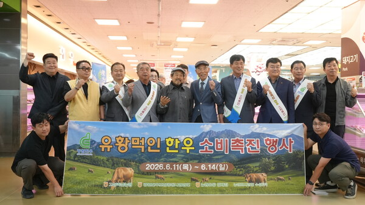
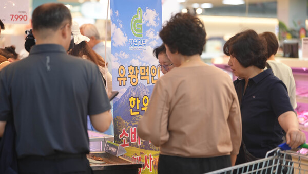
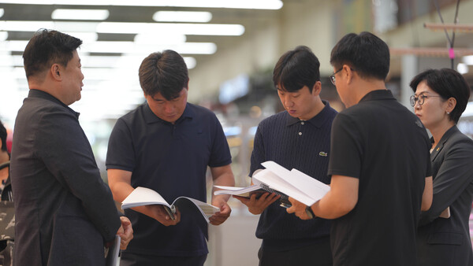

농업회사법인 수성(주)
농업분야
수성(주) 비료는 토양을 개량하고 작물 본연의 면역력을 강화하여, 병충해를 예방하고 생산량과 품질을 획기적으로 향상시킵니다.
축산분야
수성(주) 사료첨가제는 가축의 면역력을 근본적으로 강화하고 장내 환경을 개선하여, 항생제 사용을 줄이고 생산성 및 축산물의 품질을 높입니다.
수산분야
수성(주) 수산용 사료첨가제는 항생제를 대체하는 친환경 솔루션으로, 양식 어종의 질병 저항성을 극대화하고 사료 효율을 높여 생산성을 획기적으로 증대시킵니다.
[현 농축산업의 위기 극복과 미래를 위한 새로운 패러다임]
1. 위기에 처한 대한민국 농축산업의 현실
현재 대한민국 농축산업은 지속 가능성을 심각하게 위협받는 위기 상황에 직면해 있습니다. 관행적으로 사용해 온 화학 비료와 항생제는 토양의 산성화를 촉진하고 생태계를 파괴하는 주원인이 되고 있습니다. 이러한 토양 황폐화는 연작 피해와 농업 생산성 저하를 불러오며, 가축과 농산물에 잔류하는 유해 성분 문제를 야기합니다. 결과적으로 이는 지하수 오염과 생태계 불균형을 초래하고, '화학 물질 남용 → 환경 오염 → 농축산물 안전성 저하 → 국민 건강 위협'으로 이어지는 악순환의 고리를 형성하고 있습니다.
2. 새로운 패러다임으로의 전환: 지속 가능한 농축산업
이러한 위기를 타개하기 위해 친환경적이고 지속 가능한 생산 방식 도입이 절실한 시점입니다. 새로운 패러다임은 단순히 생산량을 늘리는 것을 넘어, 자연과의 조화를 통한 '친환경 농업 시스템'을 구축하는 데 초점을 맞춥니다. 이를 통해 안전하고 믿을 수 있는 고품질 농축산물을 공급함으로써 국민 건강을 보호하고, 농가의 생산성을 향상시켜 소득 증대를 도모해야 합니다. 또한, 혁신적인 농업 기술을 확보하여 글로벌 시장에서도 인정받는 경쟁력을 갖추는 것이 미래 농축산업의 핵심 목표입니다.
3. 미래 농축산업의 핵심 솔루션: '온EIO'
이러한 혁신을 이끌 차세대 솔루션으로 '온EIO'이 주목받고 있습니다. '온EIO'은 자연에서 얻은 유황을 독자적인 공법으로 법제화한 물질로, 이미 관련 기술 특허와 제반 시험성적서를 통해 그 효과를 과학적으로 입증받았습니다. 이 소재는 농업과 축산 현장에서 토지 비옥화와 가축 건강 증진을 동시에 실현하는 혁신적인 변화를 이끌고 있습니다.
4. '온EIO'의 실질적 적용 효과
- 농업 분야(친환경 비료): 토양에 적용할 경우, 화학 비료 사용을 줄이면서도 지력을 회복시키는 토양 비옥화 효과가 탁월합니다. 또한 작물의 영양분 흡수를 촉진하고 병충해에 대한 저항력을 증대시켜 작물의 품질을 획기적으로 향상시킵니다. 더불어 잔류 농약 감소와 수질 개선에도 기여하여 환경 정화의 가치를 실현합니다.
- 축산 분야(사료 혁신): 가축 사료에 적용 시 면역력을 강화하여 질병 발생률을 낮추고, 항생제 의존도를 크게 낮출 수 있습니다. 이는 친환경 축산 기반을 마련함과 동시에 육질, 난질, 유질 등 축산물 자체를 프리미엄급으로 개선하여 부가가치를 높입니다.
5. 결론: 실질적인 변화와 미래 비전
결론적으로 '온EIO' 솔루션은 화학 비료와 항생제 사용을 줄임으로써 생산 비용을 절감하고, 토양 환경 개선 및 가축 건강 증진을 통해 생산성을 극대화합니다. 이는 농가의 소득 증대로 이어질 뿐만 아니라, 유해 성분 없는 안전한 먹거리를 생산함으로써 국민 건강 증진에 이바지하는 근본적인 대안이 될 것입니다.
제품 카테고리
적용 대상에 맞춘 6개 라인업
자료실 안내
제품 인증서, 시험성적서, 고해상도 이미지 등 용량이 큰 자료는 자료실에서 내려받으실 수 있습니다.
공지사항
전체보기-
농축산업 법제 유황 프리미엄 한우 품질로 전국 판로 확대 2026.06.11
농협 양재점 '유황 먹인 한우' 시식회…"소비자 엄지척"
법제 유황 기술 접목 상생형 농축산 협력사업 시동

"지난 11일 서울 농협하나로마트 양재점에서 시식회를 열고 기념사진을 찍고 있다"
[통합뉴스 김현수 기자] 농협유통과 농업회사법인 수성이 서울 농협 하나로마트 양재점에서 미생물 법제 유황 기술이 적용된 프리미엄 브랜드 '유황 먹인 한우' 시식회를 개최하고, 지역과 소비자가 만족하는 상생형 농축산 협력사업 확대에 나섰다.
이 같은 사례는 농협유통과 농업회사법인 수성의 'ON·EIO 유황 먹인 한우'를 통해 생산부터 유통까지 상생 모델을 구축하고 있으며, 건강한 소비를 희망하는 소비자들에게 법제 유황을 통한 농축산업의 관심도 높아지고 있는 추세다.

"지난 11일 서울 농협하나로마트 양재점에서 시식회가 열리고 있다"
이번 농협 하나로마트 양재점 시식회는 강원도 고성군 청정 자연환경을 기반으로 생산되는 유황한우와 유황미를 지역 대표 브랜드로 육성하고, 생산.가공.유통을 연계한 고부가가치 산업으로 발전시킨다는 수성 농업회사법인의 목표다.
농업회사법인 수성은 수도권 농협 하나로마트를 시작으로 지방자치단체와 협력하여 단계별 실증사업을 추진하고, 공동브랜드 개발 및 전국 유통 확대를 통해 지역 농업의 부가가치를 높이는 중강기 협력 모델을 구축하겠다는 방침이다.
농협 하나로마트 양재점 시식회에서 소비자들과 관계자들은 기름이 잘 응고되지 않는 사례를 접하고 '엄지척'과 맛에 대한 특별함 고소함과 풍미가 다르다고 평가했다.

"수성(주) 이경호 대표이사가 관계자들과 함께 행사 내용등을 설명하고 있다"
이 같은 평가에 대해 수성 대표는 "개발한 미생물 법제 유황(Microbially Processed Bio-Sulfur) 기술을 기반으로 한 농축산 바이오 플랫폼 브랜드는 맛과 품질에 우수성을 보이고 있다"며 "광물성 유황을 미생물 공정을 통해 농축산업에 활용 전환한 기술로, 사료·비료·농업용 자재 등에 적용되고 있다"고 밝혔다.
이번 사업은 강원도 고성군 청정 자연환경을 기반으로 생산되는 유황 한우와 유황미(쌀)를 지역 대표 브랜드로 육성하고, 생산·가공·유통을 연계한 고부가가치 산업으로 발전시킨다는 목표다.
농업법인 수성은 독자적인 법제유황 기술을 활용해 유황 바이오 사료와 비료를 공급하고, 지역 농가는 이를 활용해 유황한우와 유황미를 생산하게 된다. 농협은 공동 브랜드 개발과 유통망 구축을 맡아 전국 하나로마트 및 온라인 판매 확대를 추진한다.
농업법인 수성 대표는 "ON·EIO는 단순한 법제 유황 제품이 아니라 토양과 작물, 가축, 식품을 연결하는 통합 바이오 플랫폼"이라며 "농협과 지역 농가가 함께 참여하는 상생 모델을 통해 대한민국 농축산업의 경쟁력을 높이고 프리미엄 농축산물 시장을 선도해 나가겠다"고 밝혔다.
법제 유황을 통한 농축산물의 프리미엄 브랜드화와 농협 하나로마트 등의 판로 확대 등 생산자와 소비자 모두가 만족하는 상생 모델의 기술과 관계기관 협력이 모두의 만족을 구현한다는 점에서 관심을 끌고 있다.
김현수 기자 newsman3@hanmail.net · 입력 2026.06.15 19:15 · 출처: 통합뉴스 (tonghabnews.com)
-
2026년 하반기 품질인증 갱신 완료 안내 2026.07.02
여기에 공지 상세 내용을 입력하세요. -
수출용 바이오황 신제품 라인업 출시 2026.06.18
여기에 공지 상세 내용을 입력하세요. -
홈페이지 개편 및 다국어 서비스 오픈 2026.06.01
여기에 공지 상세 내용을 입력하세요.